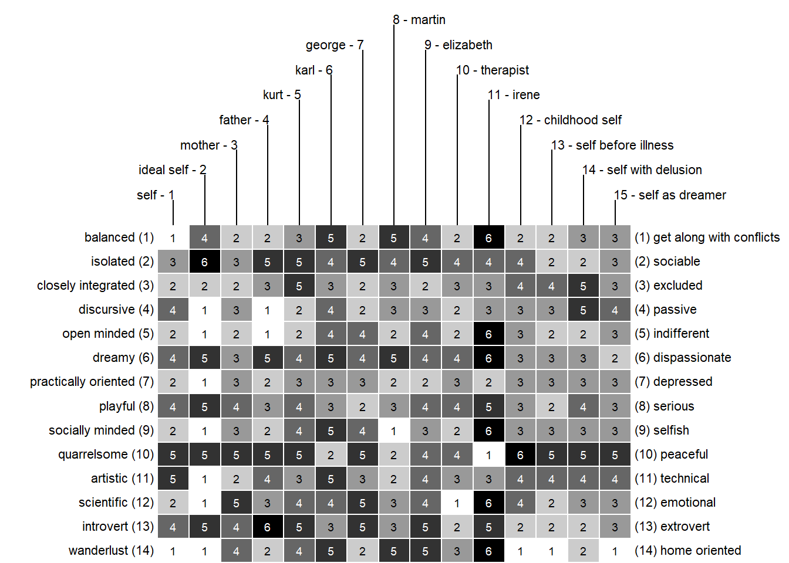
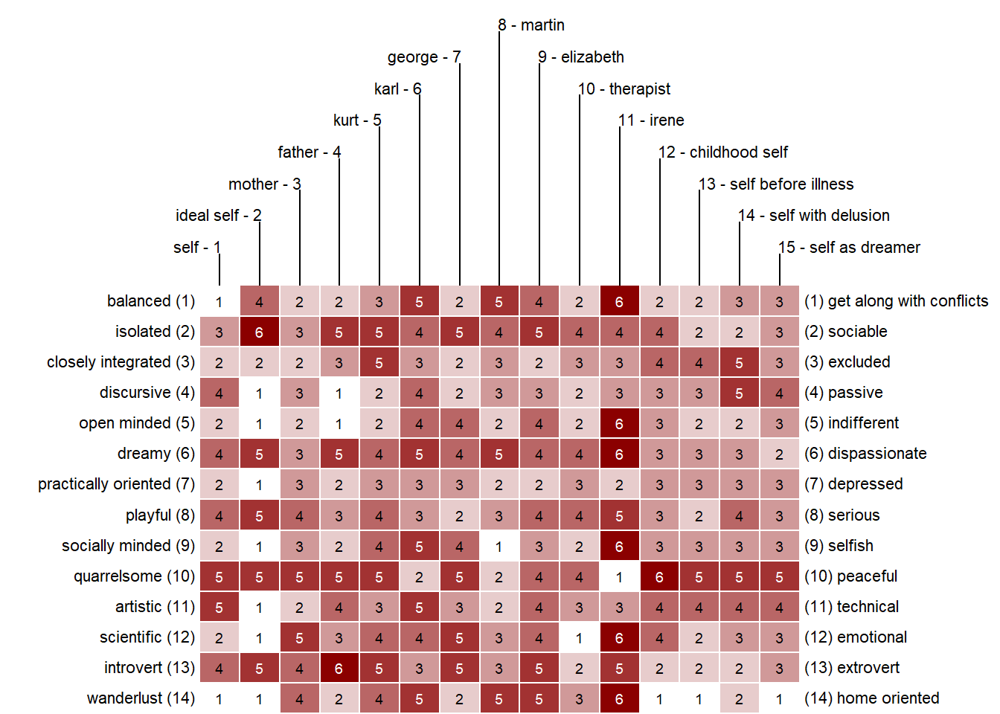
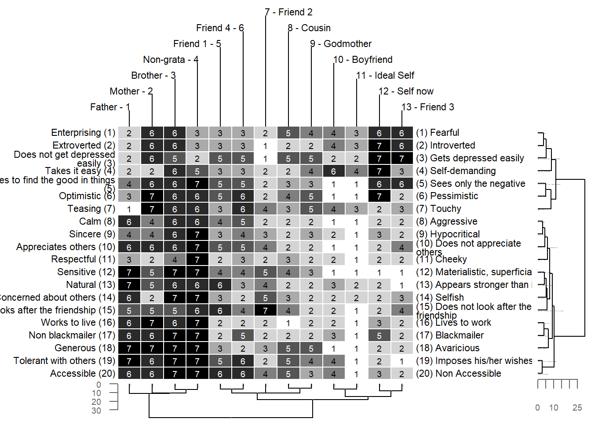

Bertin display
Description
One of the most popular ways of displaying grid data has been adopted from Bertin’s (1966) graphical proposals, which have had an immense influence onto data visualization. One of the most appealing ideas presented by Bertin is the concept of the reordable matrix. It is comprised of graphical displays for each cell of a matrix, allowing to identify structures by eye-balling reordered versions of the data matrix (see Bertin, 1966). In the context of repertory grids, the Bertin display is made up of a simple colored rectangle where the color denotes the corresponding score. Bright values correspond to low, dark to high scores. For an example of how to analyze a Bertin display see e. g. Dick (2000) and Raeithel (1998).
R-Code
Bertin display (standard)
bertin(boeker)
Various settings can be modified in the bertin function. To see the whole set of options type ?bertin to the R console.
Color
E.g. to change the color of the display use the argument color.
bertin(boeker, color=c("white", "darkred"))
Printing of Scores
To suppress the printing of the scores and only plot the colors use
bertin(boeker, showvalues=FALSE)
** Construct / Element Index **
The argument id allows to manage the printing of an index number of the elements and constructs.
bertin(boeker, id=c(T, F)) # only index numbers for constructs
bertin(boeker, id=c(F, T)) # only index numbers for elements
bertin(boeker, id=c(F, F)) # no index numbersClustered Bertin
Beside the standard Bertin display also a clustered version is available. It contains a standard Bertin display in its center and dendrograms at the sides. How to cluster a grid is described here. You should read the cluster section first to understand the following code.
As a default Euclidean distance and ward clustering is applied to the grid.
bertinCluster(feixas2004)To apply different distance and cluster methods use the arguments dmethod (abbreveated: dm) and cmethod (abbreveated: cm). For more information on clustering go to here. The following code uses manhattan distance and single linkage clustering.
bertinCluster(feixas2004, dmethod="manhattan", cm="single") 
Sometimes it is desirable to spot structures by eye-balling the colors. For this purpose the printing of the scores can be surpressed.
bertinCluster(feixas2004, showvalues=FALSE) Other options include to suppress the axis of the dendrogram
bertinCluster(feixas2004, draw.axis=F) # no axis drawn for dendrogram or to chose a rectangular type of dendrogram.
bertinCluster(feixas2004, type="rectangle") # rectangle type dendrogram 
Literature
- Bertin, J. (1966). Sémiologie graphique: Diagrammes, réseaux, cartographie. Paris: Mouton.
- Dick, M. (2000). The Use of Narrative Grid Interviews in Psychological Mobility Research. Forum Qualitative Sozialforschung / Forum: Qualitative Social Research, 1(2).
- Raeithel, A. (1998). Kooperative Modellproduktion von Professionellen und Klienten - erlauetert am Beispiel des Repertory Grid. Selbstorganisation, Kooperation, Zeichenprozess: Arbeiten zu einer kulturwissenschaftlichen, anwendungsbezogenen Psychologie (pp. 209-254). Opladen: Westdeutscher Verlag.